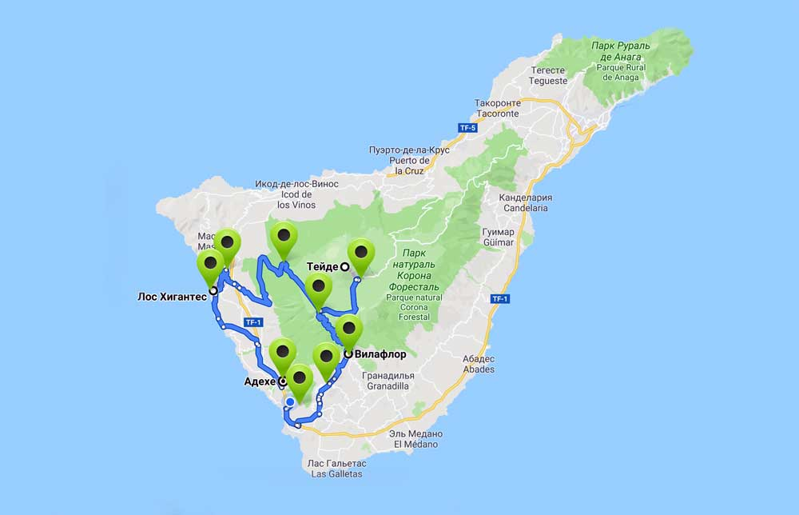

О Тенерифе
Тенери́фе (исп. Tenerife) — самый крупный остров в составе архипелага из семи Канарских островов в Атлантическом океане. С относительно небольшой площадью в 2034,38 км² и населением в 906 800 человек, что составляет 43 % численности населения всего архипелага, он является самым населённым в Испании. Он занимает центральное положение относительно островов архипелага и вместе с тремя соседними островами Пальма, Гомера и Иерро входит в состав провинции Санта-Крус-де-Тенерифе с административным центром в одноимённом городе.
Вулкан Тейде
Продолжительность: 5 часов. Обзорная экскурсия на вулкан Тейде начинается с южного побережья. Подъем по серпантину вдоль живописных ландшафтов с зарослями кактусов переходящих в виноградники. Деревушка Вилафлор с террассными полями на высоте 1400 метров и знакомство с первой достопримечательностью, огромной Канарской сосной. Сделаем остановку для дигустации Канарских вин. Забравшись выше уровня облаков следует остановка на обзорной площадке, здесь открываются великолепные пейзажи побережья острова. Заехав на территорию национального парка делаем перевал через горный массив внутрь старого кратера с остановкой и знакомством истории происхождения островов. Проезжая через лавовые породы и кальдеру старого вулкана, попадаем на смотровую площадку с "перстом бога". Следующая точка нашей экскурсии на вулкан Тейде станет остановка у подножья вулкана. Далее фуникулер поднимет Вас еще на километр, на высоту 3555 метров. Стоимость евро (за авто): до 4 пассажиров - 120€ легковой автомобиль от 5 до 8 пассажиров - 40€/чел.

Тейде - Гигантес
Продолжительность: 7 часов. Поездка схожа с маршрутом экскурсии описанным выше, однако после посещения вулкана Тейде Вас ожидает продолжение знакомства с достопримечательностями острова. Маршрут пролегает среди вулканических черных пород лавы вдоль пика Вьехо а так же можно увидеть последствия извержения последнего вулкана на острове. Преоткрываю тайну скажем что вулкан Тейде совсем не главный вулкан острова. Спустившись на западеую часть острова полюбуемся, с обзорной площадки, шикарными видами на скалы Лос Гигантес. Посмотрим натуральный бассейн с океанической водой и побываем на знаменитом пляже с черным вулканическим песком. Последней видовой остановкой станет шикарный пляж, с желтым песком, отеля Абама. Возьмите с собой на поездку купальеики и полотенца, Вы побываете на таких разных и прекрасных пляжах.
Стоимость евро (за авто): до 4 пассажиров - 160€ легковой автомобиль от 5 до 8 пассажиров - 50€/чел.
Тейде и север острова
Продолжительность: 9 часов. После посещения вулкана отправляемся на северную часть острова. Следующей остановкой нашей обзорной экскурсии по Тенерифе станет "марсианская" площадка, сплошь покрытая пемзой. Перед Вами откроются вершины старого кратера, формировавшего структуру острова. Спустившись в северную часть острова посетим старинный город балконов, познакомимся с историей города и острова, увидим основные достопримечательности города Оротава. Ознакомимся с природой северной части Тенерифе и посетим тысячелетнее драконовое дерево. Поднимемся на высоту 700 метров, где с обзорной площадки полюбуемся городом Гарачико. Городом который был накрыт извержением лавы в 1706 году. Далее следует еще один перевал на 1100 метров и живописная дорога домой.
Стоимость евро (за авто): до 4 пассажиров - 190€ легковой автомобиль от 5 до 8 пассажиров 50€/чел.
Две столицы и восток
Продолжительность: 8 часов. Поездка начинается по автотрассе ведущей в современную столицу, город Санта Крус. По дороге сделаем остановку в городе Канделярия с осмотром церкви с черной девой Марией и прогулкой по площади со статуями воинов Гуанче. Окажемся на искуственном пляже Лас Тереситас с привезенным песком с Африканского континента. Поднявшись на обзорную площадку увидим полтораколометровую косу пляжа с высоты птичьего полета. По серпантину поднимемся к вершинам гор где в буквальном смысле сможете дотронуться до облаков. Побываем в этническом кафе и попробуем типичную Канарскую кухню. Под стаканчик домашнего вина полюбуетесь склонами северной части острова. Прогуляемся по эндемическому лесу, среди реликтовых растений и с обзорной площадки полюбуетесь пейзажами равнин деревни Мерседес. Минуя деревушку попадаем в исторический центр старой столицы острова, город Лагуна. Прогуляемся по старинным улочкам среди исторических памятников с десятками мелких лавочек станет красивой финальной точкой в обзорной экскурсии по Тенерифе.
Стоимость евро (за авто): до 4 пассажиров - 180€ легковой автомодиль от 5 до 8 пассажиров - 50€/чел.
Деревня маска и скалы Гигантес
Продолжительность: 5 часов. Обзорная поездка в пиратскую деревню Маска известна своими не простыми дорогами и серпантинами, данная экскурсия будет интересна всем без исключения. Однополосная дорога с карманами для разъезда со встречным транспортом, крутые развороты в сочетании с не менее крутыми спусками в сочетании с потрясающими видами делают этот маршпут по настоящему испытанием для туриста, как эмоционального так и физического. По дороге сделаем остановки на смотровых площадках, а в самой деревне Маска Вас ожидает часовая прогулка по извилистым тропам сохранившим дух древних времен пиратского прошлого острова. После прогулки по деревушке отправимся покорять видовые склоны западного побережья Тенерифе. Продолжением экскурсии по Тенерифе станет посещение обзорной площадки у величественно возвышающихся на высоту более километра скал Гигантес. Финальной точкой путишествия по западной части острова станет остановка для купания на пляже с черным вулканическим песком.
Стоимость евро (за авто): до 4 пассажиров - 180€ легковой автомодиль от 5 до 8 пассажиров - 50€/чел.